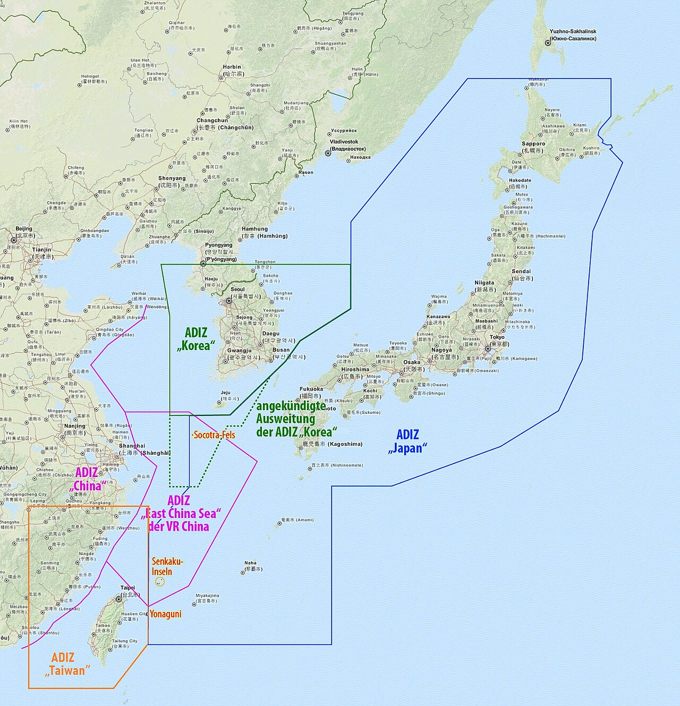
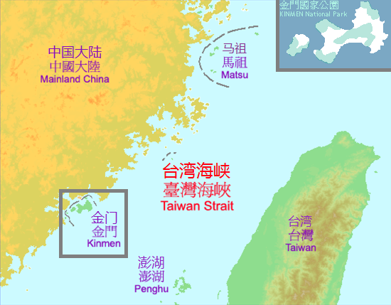
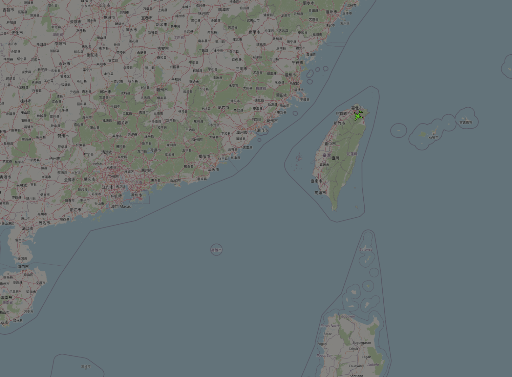

Data-driven briefings on Indo Pacific geopolitics, market impacts, and supply chain vulnerabilities.

Monitoring the intersection of the Taiwan Strait and the Strait of Hormuz to measure global market vulnerability.
Read Briefing →
Tracking the archetypal rise and fall of economic empires through the lens of modern geopolitical inflation triggers.
Read Briefing →Everyone is buying Nvidia stock, but the physical reality of AI is built on a massive, singular point of failure.
Read Briefing →
If the official economy is doing so well, why is the cost of basic survival spiking for everyday people?
Read Briefing →
How geopolitical choke points in the oceans are directly driving up the cost of everything you buy.
Read Briefing →
Does a 1% dip in TSMC really predict conflict? We analysed 5 years of S&P 500 correlation data to find the truth about the "Geopolitical Discount."
Read Briefing →
A blockade would not just hurt Taiwan; it would cripple Apple's 3nm supply chain and freeze Nvidia's AI hardware shipments within 48 hours.
Read Briefing →
Retail investors panic during military drills, but institutional capital usually shrugs. Here is why the S&P 500 ignores routine aviation manoeuvres.
Read Briefing →We model a 48 hour commercial quarantine of Taiwan's ports. The resulting bullwhip effect would trigger a global manufacturing recession.
Read Briefing →
For 70 years, a theoretical line kept the superpowers apart. Since 2022, the PLA has systematically erased this vital buffer zone.
Read Briefing →
Media outlets constantly conflate Air Defence Identification Zones with sovereign airspace. Understand the legal difference to filter out fearmongering.
Read Briefing →
Sitting just two kilometres from China, these heavily fortified islands are the ultimate frontline for Beijing's aggressive maritime grey zone tactics.
Read Briefing →Sand dredgers, agricultural bans, and cyber warfare. How China tests Taiwan's resilience daily without ever firing a single kinetic shot.
Read Briefing →
Why open-source intelligence relies on tracking the divergence between broad market indices and critical defence manufacturing.
Read Briefing →
You do not need a security clearance to monitor the PLA. A beginner's guide to using ADS-B Exchange and official OSINT to track military flights.
Read Briefing →
Our NLP algorithm strips away emotional journalism to find the real threat. Why we classify 90% of geopolitical headlines as background radiation.
Read Briefing →
When Beijing mentions a "red line," it is a highly calibrated trigger. How we track the escalation ladder of US-China diplomatic rhetoric.
Read Briefing →Every major government currently rates Taiwan as "Level 1" safe. We break down the real risks and show you how to travel with confidence.
Read Briefing →